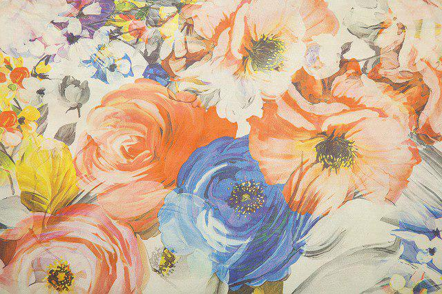
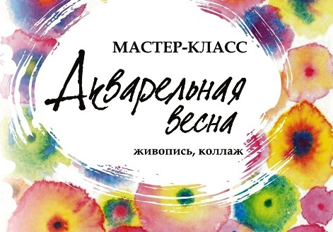

Выставка детских работ «ЦВЕТЫ»
c 5 по 25 маяДрузья, приглашаем вас посетить новую, яркую выставку студии изобразительного искусства «Варвара», которая открылась 5 мая в Городском доме культуры национального творчества и будет радовать вас до 25мая. Название выставки говорит само за себя – «ЦВЕТЫ». 20 юных художников от 5 до 11 лет дарят вам в своих работах настоящее буйство красок, яркое солнце и аромат весенних цветов! Работы, представленные на выставке, выполнены гуашью, акварелью, фломастерами и маркерами. Картины получились удивительно разнообразные! Гиацинты, тюльпаны, нежные ромашки и невесомые одуванчики, праздничные букеты в вазах, солнечные поляны сказочных цветов. Несмотря на то, что художники совсем еще юные, они смело пользуются различными выразительным средствами изобразительного искусства – цветом, живописным мазком, линией, пятном, колоритом. Многие работы выполнены без участия карандаша – написаны смелыми широкими мазками кисти. Но, самое главное, каждая работа дарит вам искреннее любование красками наступившей весны и особенный мир детской радости и счастья.

Мастер-класс «Акварельная весна»
Наконец-то приближается весна! Она будет тёплой, солнечной и совсем скоро наступит лето со всеми его прелестями и сложностями. В преддверии этого неизбежного, но приятного события хотим поделиться с вами разнообразными способами рисования цветов, для которых весна и лето — самое благодатное время! Рисовать будем в смешанной технике — акварель, цветные акварельные карандаши, белый маркер, гелиевая ручка, резерв для акварели. Вы погрузитесь в мир ярких красок и контрастов, ведь смешанная техника будет включать в себя возможность пописать акварелью и добавить акцент другим материалом. А полученный результат, множество нарисованных цветов вы объедините в единую композицию-коллаж. Вы узнаете основные приемы работы в смешанной технике, сможете создать свою неповторимую, интересую и необычную картину. Мастер-класс всегда нацелен на абсолютно любого человека. Даже на того, кто никогда не рисовал, но вполне сможет написать красивую картину. Не бойтесь, друзья! Приходите, и сами убедитесь, что Вы можете рисовать!